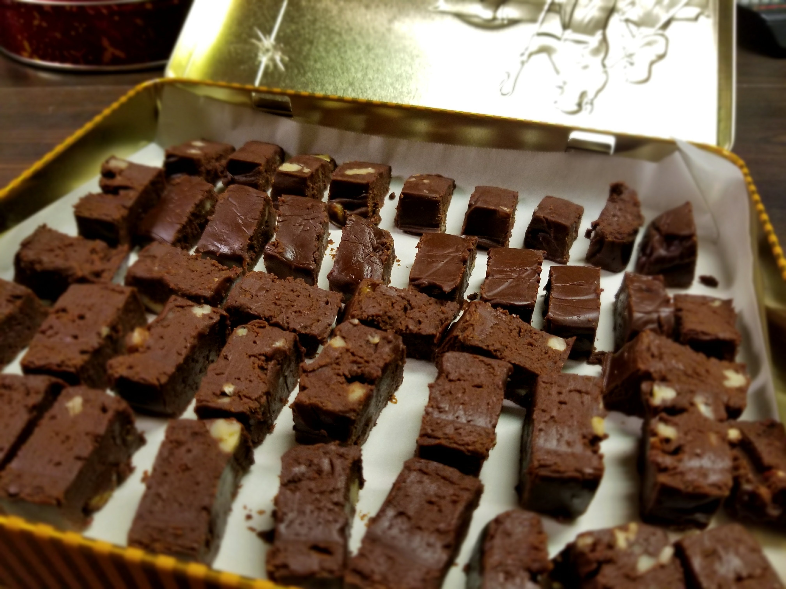

Grandma's Fudge

Recipe handed down to me as "Sees Chocolate Fudge"
I have been making this fudge since I was able, and before that I helped my mom stir (and stir and stir) when she made it. Reserved for holidays, this fudge recipe is rich and dark. My mom says she got the recipe from her mom. It's always been in her book as being called "Sees Chocolate Fudge" - Sees being a candy company from decades ago. Add nuts if you like. Or not. It's delicious either way.
Ingredients:
- 4 1/2 cups sugar
- 1 cup butter
- 1 (13 oz) can evaporated milk
- 3 (12 oz) packages semi-sweet chocolate chips
- 1 (16 oz) package marshmallows (NOT mini!)
- (optional) 1 cup chopped nuts
Steps
- On medium-high(ish) heat in heavy-bottomed pan, add sugar, butter, and milk.
- Mix well together until boiling.
- Boil for 8 minutes (SET A TIMER!) then turn off burner (or remove from burner if electric stove).
- Add chocolate chips, marshmallows, and nuts to pan.
- STIR until chocolate chips and marshmallows are melted. (This builds your arm muscles!)
- Pour into buttered 9x13 pan. Allow to cool. Cut into pieces.
Cutting tip - Cover your counter with wax paper and turn the pan upside down after dipping the bottom of the pan in hot water for a few seconds. Then use a long knife to cut end-to-end. MUCH easier than cutting them in the pan. ;)